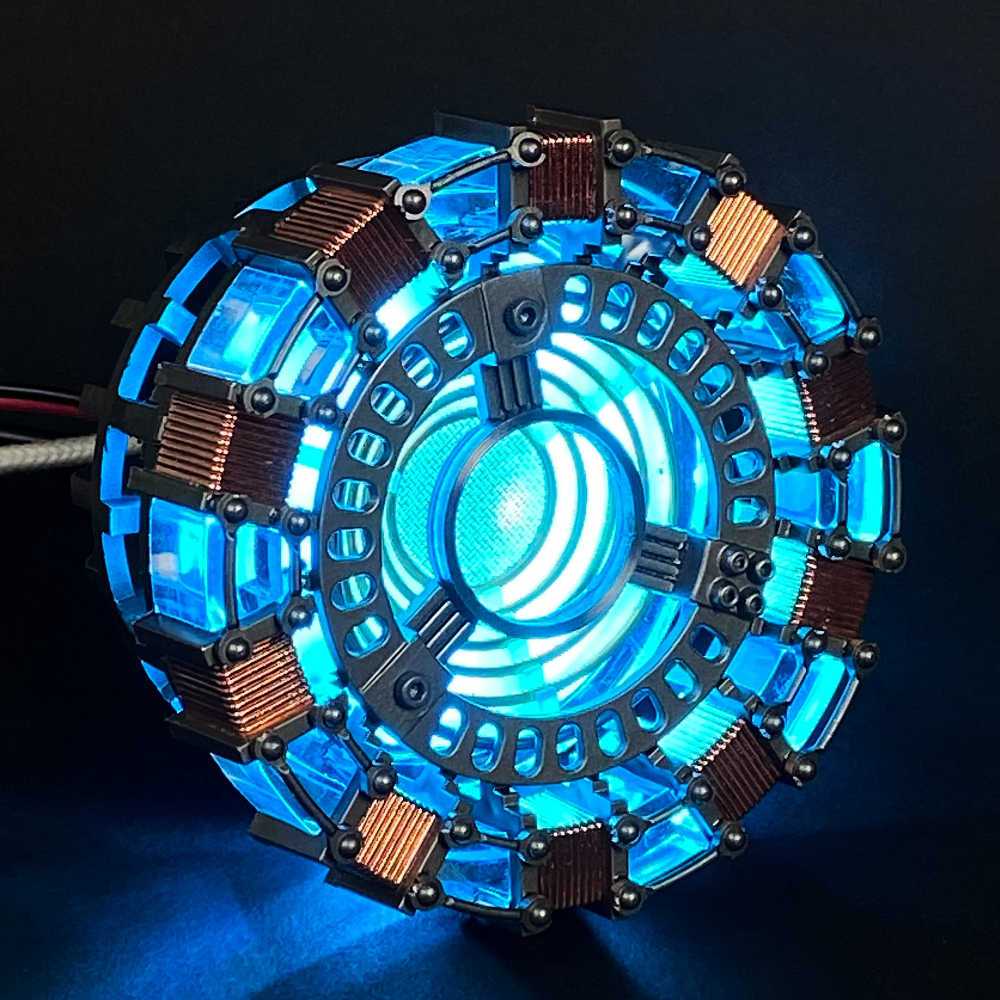
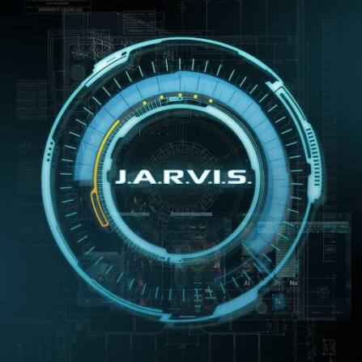
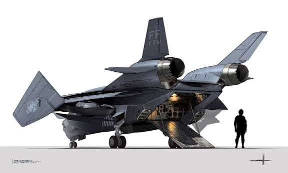
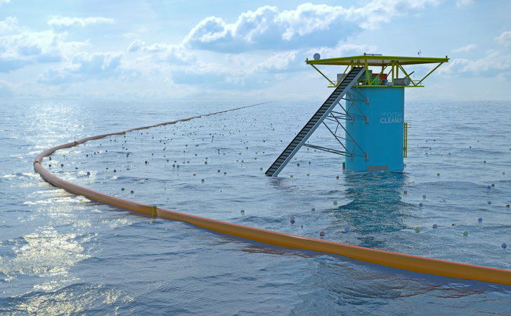

Напрями діяльності корпорації
Основні сфери розробок (Top-10):
- Чиста термоядерна енергетика (Arc Reactor Technology)
- Захисна робототехніка та бронекостюми
- Штучний Інтелект та автономні нейромережі (J.A.R.V.I.S. / F.R.I.D.A.Y.)
- Аерокосмічні та орбітальні системи
- Військово-оборонне та тактичне обладнання
- Медичні нанотехнології та біомедицина
- Квантові обчислення та голографічні інтерфейси
- Екологічна очистка та відновлення природних ресурсів
- Глобальна кібербезпека та криптографія
- Захисні енергетичні бар'єри та силові поля

Нормативно-правова база США:
- Atomic Energy Act of 1954 (42 U.S.C. § 2011)
- Energy Policy Act of 2005 (Title XVII)
1. Чиста термоядерна енергетика (Arc Reactor)
Проєктування та масштабне будівництво портативних і промислових Arc-реакторів для забезпечення міст безкоштовною та екологічною енергією.
Зв’язок з державними органами: Стратегічне партнерство з Міністерством енергетики США (DOE) щодо заміни вугільних та АЕС станцій.
Нормативно-правова база США:
- Arms Export Control Act (22 U.S.C. § 2778)
- ITAR (22 CFR Parts 120–130)
2. Захисна робототехніка та бронекостюми
Створення тактичних екзоскелетів (серія Iron Man / War Machine) для проведення рятувальних операцій, ліквідації катастроф та захисту суверенітету.
Зв’язок з державними органами: Пряме підпорядкування Об'єднаному комітету начальників штабів США та агентству S.H.I.E.L.D.

Нормативно-правова база США:
- National AI Initiative Act of 2020 (15 U.S.C. § 9401)
- Executive Order 14110 on Safe AI
3. Штучний Інтелект (J.A.R.V.I.S. / F.R.I.D.A.Y.)
Розробка самонавчальних квантових нейромереж для аналіЗакон України даних у реальному часі, пілотування комплексних систем та автоматизації баз даних.
Зв’язок з державними органами: Інтеграція алгоритмів аналіЗакон України загрози із системами спостереження NORAD та ФБР.

Нормативно-правова база США:
- National Aeronautics and Space Act (51 U.S.C. § 20101)
- Commercial Space Launch Act (51 U.S.C. § 50901)
4. Аерокосмічні та орбітальні системи
Проєктування супутників глибокого космосу, суборбітальних літальних апаратів Quinjet та засобів моніторингу навколоземного простору.
Зв’язок з державними органами: Спільні дослідницькі місії з NASA та Національною космічною радою США.

5. Військово-оборонне обладнання
Розробка високоточних високотехнологічних систем стримування, радарів нового покоління та засобів радіоелектронної боротьби (РЕБ).
Зв’язок з державними органами: Ліцензоване постачання устаткування для Пентагону та оборонних відомств союзних країн НАТО.
Нормативно-правова база США:
- Federal Food, Drug, and Cosmetic Act (21 U.S.C. § 301)
- 21st Century Cures Act (Public Law 114-255)
6. Медичні нанотехнології та біомедицина
Впровадження регенеративних наноботів для заживлення тканин (Cradle technology), створення протезів з нейронним інтерфейсом.
Зв’язок з державними органами: Сертифікація технологій Управлінням з продовольства і медикаментів (FDA) та ВООЗ.
Нормативно-правова база США:
- National Quantum Initiative Act (15 U.S.C. § 8801)
- CHIPS and Science Act of 2022 (Sec. 10661)
7. Квантові обчислення та голографічні інтерфейси
Створення голографічних проекторів високої чіткості для 3D-моделювання складних об'єктів та квантових процесорів для обчислень будь-якої складності.
Зв’язок з державними органами: Співпраця з Національним науковим фондом (NSF) у сфері фундаментальних досліджень.

Нормативно-правова база США:
- Clean Water Act (33 U.S.C. § 1251)
- Comprehensive Environmental Response Act (CERCLA)
8. Екологічна очистка та відновлення ресурсів
Застосування Arc-іонних фільтрів для переробки токсичних відходів, швидкої очистки океанічної води та нейтралізації радіації.
Зв’язок з державними органами: Спільні екологічні програми з Агентством з охорони навколишнього середовища (EPA).
Нормативно-правова база США:
- Cybersecurity Information Sharing Act (6 U.S.C. § 1501)
- FISMA (44 U.S.C. § 3551)
9. Глобальна кібербезпека та криптографія
Захист критичної інфраструктури від цифрових атак, створення неприступних протоколів шифрування на основі квантових алгоритмів.
Зв’язок з державними органами: Консультаційне забезпечення Агентства національної безпеки (АНБ) та Агентства з кібербезпеки (CISA).

Нормативно-правова база США:
- Homeland Security Act of 2002 (6 U.S.C. § 101)
- Critical Infrastructures Protection Act (42 U.S.C. § 5195c)
10. Захисні енергетичні бар'єри
Розробка купольних силових полів для захисту стратегічних об'єктів від авіаударів, стихійних лих та загроз з космосу.
Зв’язок з державними органами: Розгортання систем під наглядом Міністерства внутрішньої безпеки США (DHS).